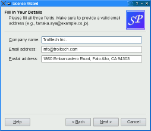

| Home · All Classes · Modules · QSS HELP · QSS 案例 · VER007 HOME |
该QWizard类提供了一个向导框架。More...
继承QDialog。
该QWizard类提供了一个向导框架。
一个向导（也称为Mac OS X上的助手）是一种特殊类型的输入对话框，它包含的页面顺序。一个向导的目的是通过一步一个工艺步骤引导用户。奇才是复杂或罕见的任务，用户可能会发现很难学到有用的。
QWizard继承QDialog并表示一个向导。每个页面都是一个QWizardPage（一QWidget子类） 。要创建自己的向导，你可以直接使用这些类，或者你可以继承他们进行更多的控制。
主题：
下面的例子演示了如何创建向导页面，并将其添加到向导。对于更高级的示例，请参见Class Wizard和License Wizard。
QWizardPage *createIntroPage() { QWizardPage *page = new QWizardPage; page->setTitle("Introduction"); QLabel *label = new QLabel("This wizard will help you register your copy " "of Super Product Two."); label->setWordWrap(true); QVBoxLayout *layout = new QVBoxLayout; layout->addWidget(label); page->setLayout(layout); return page; } QWizardPage *createRegistrationPage() { ... } QWizardPage *createConclusionPage() { ... } int main(int argc, char *argv[]) { QApplication app(argc, argv); QString translatorFileName = QLatin1String("qt_"); translatorFileName += QLocale.system().name(); QTranslator *translator = new QTranslator(&app); if (translator->load(translatorFileName, QLibraryInfo.location(QLibraryInfo.TranslationsPath))) app.installTranslator(translator); QWizard wizard; wizard.addPage(createIntroPage()); wizard.addPage(createRegistrationPage()); wizard.addPage(createConclusionPage()); wizard.setWindowTitle("Trivial Wizard"); #ifdef Q_OS_SYMBIAN wizard.showMaximized(); #else wizard.show(); #endif return app.exec(); }
QWizard支持四个精灵的样子：
你可以明确地设置一下使用使用setWizardStyle（ ） （例如，如果你想同样的外观在所有平台） 。
| ClassicStyle | ModernStyle | MacStyle | AeroStyle |
|---|---|---|---|
 |
 |
 |
 |
|  |  |
 |
 |
注意：AeroStyle只有在Windows Vista系统上的alpha合成启用效果。ModernStyle作为当不满足这个条件的后备。
除了精灵的风格，也有控制精灵的外观和感觉的几个选项。这些可以使用设置setOption（）或setOptions（ ） 。例如，HaveHelpButton让QWizard秀一Help连同其他向导按钮按钮。
使用的向导按钮的顺序，你甚至可以更改为任意顺序setButtonLayout（ ），您最多可以添加三个自定义按钮（例如，Print按钮）按钮行。这是通过调用实现setButton（）或setButtonText（ ）与CustomButton1，CustomButton2或CustomButton3设置按钮，并且通过使HaveCustomButton1，HaveCustomButton2或HaveCustomButton3选项。每当用户点击自定义按钮，customButtonClicked（）被发射。例如：
wizard()->setButtonText(QWizard.CustomButton1, tr("&Print"));
wizard()->setOption(QWizard.HaveCustomButton1, true);
connect(wizard(), SIGNAL(customButtonClicked(int)),
this, SLOT(printButtonClicked()));
向导包括一个序列的QWizardPage秒。在任何时间，仅示出一个页面。一个页面具有以下属性：
图中初级讲座展示QWizard如何呈现这些属性，假设他们都是现在和ModernStyle用于：

当subTitle被设置， QWizard在报头中显示它，在这种情况下，它也使用了BannerPixmap和LogoPixmap装饰头。该WatermarkPixmap被显示在左侧，头下方。在底部，有一排按钮允许用户浏览页面。
页面本身（的QWizardPage插件）佔据的标题，水印，按钮行之间的区域。典型地，该网页是QWizardPage在其上QGridLayout安装，使用标准子部件（QLabel秒，QLineEdit秒，等等）。
如果精灵的风格MacStyle，页面看起来完全不同：

水印，旗帜，徽像素图是由忽略MacStyle。如果BackgroundPixmap被设置，它被用作背景为向导，否则，一个默认的“助手”的图像被使用。
标题和副标题都是通过调用设置QWizardPage.setTitle（）和QWizardPage.setSubTitle（ ）上的个人网页。他们可能是纯文本或HTML （见titleFormat和subTitleFormat） 。该像素图就可以设置全局使用的整个向导setPixmap（ ） ，或在每个页面的基础上使用QWizardPage.setPixmap（ ） 。
在许多向导页面的内容可能会影响后面的页的字段的缺省值。为了便于页面之间进行通信， QWizard支持一个“场”的机制，允许您注册一个字段（例如，QLineEdit）上的一个页面，访问任何网页它的价值。它也可以指定必填字段（即，必须在用户之前被填充字段可以前进到下一个页面） 。
要注册一个字段，调用QWizardPage.registerField（）字段。例如：
ClassInfoPage.ClassInfoPage(QWidget *parent) : QWizardPage(parent) { ... classNameLabel = new QLabel(tr("&Class name:")); classNameLineEdit = new QLineEdit; classNameLabel->setBuddy(classNameLineEdit); baseClassLabel = new QLabel(tr("B&ase class:")); baseClassLineEdit = new QLineEdit; baseClassLabel->setBuddy(baseClassLineEdit); qobjectMacroCheckBox = new QCheckBox(tr("Generate Q_OBJECT ¯o")); registerField("className*", classNameLineEdit); registerField("baseClass", baseClassLineEdit); registerField("qobjectMacro", qobjectMacroCheckBox); ... }
上面的代码注册三个字段，className，baseClass和qobjectMacro，这是三个子控件相关联。星号（*）旁className表示必填字段。
任何页面的字段是从什么页面访问。例如：
void OutputFilesPage.initializePage() { QString className = field("className").toString(); headerLineEdit->setText(className.toLower() + ".h"); implementationLineEdit->setText(className.toLower() + ".cpp"); outputDirLineEdit->setText(QDir.convertSeparators(QDir.tempPath())); }
在这里，我们称之为QWizardPage.field（ ）来访问的内容className字段（这是在所定义的ClassInfoPage） ，并用它来初始化OuputFilePage。该字段的内容返回为一个QVariant。
当我们使用创建一个字段QWizardPage.registerField（ ） ，我们通过一个唯一的字段名和窗口小部件。我们还可以提供一个Qt的属性名字和一个“改变”信号（即所发射的属性发生变化时的信号）作为第三和第四个参数，但是，这是没有必要的最常见的Qt部件，如QLineEdit，QCheckBox和QComboBox，因为QWizard知道查找哪些属性。
如果一个星号（*）追加到名字的时候该物业登记，该字段是mandatory field。当一个页面有必填字段中，Next和/或Finish按钮被激活，只有当所有必填字段被填充。
考虑现场“装” ， QWizard简单地检查该字段的当前值不等于原来的值（它有值时，initializePage（ ）被调用） 。为QLineEdit和QAbstractSpinBox子类， QWizard还检查hasAcceptableInput()返回True ，兑现任何验证或面具。
是提供了方便QWizard的强制性场机制。一个更强大的（但也比较麻烦），另一种方法是重新实现QWizardPage.isComplete（）和以发射QWizardPage.completeChanged（ ）信号时的页面变得完整或不完整。
的启用/禁用状态Next和/或Finish按钮是向所述用户输入执行验证的一种方法。另一种方式是重新实现validateCurrentPage（ ）（或QWizardPage.validatePage（））来执行一些最后一分钟的验证（并且显示一个错误信息，如果用户输入了不完整的或无效的信息）。如果函数返回True，则下一个页面显示（或向导完成），否则，在当前页面熬夜。
大多数向导具有线性结构，第1页其次是第2页，依此类推直到最后一页。该Class Wizard例子是这样的精灵。随着QWizard ，线性精灵是通过实例的创建QWizardPages和利用它们插入addPage（ ） 。默认情况下，页面都显示在它们被添加的顺序。例如：
ClassWizard.ClassWizard(QWidget *parent) : QWizard(parent) { addPage(new IntroPage); addPage(new ClassInfoPage); addPage(new CodeStylePage); addPage(new OutputFilesPage); addPage(new ConclusionPage); ... }
当一个网页是关于要显示， QWizard电话initializePage（ ） （这反过来又调用QWizardPage.initializePage（））来使用默认值填充页面。默认情况下，此功能不执行任何操作，但它可以被重新实现来初始化基于其它网页的田地页面的内容（见example above） 。
如果用户按下Back，cleanupPage（）被调用（这反过来又调用QWizardPage.cleanupPage（））。默认实现重置页面的栏位为原始值（他们之前所拥有的价值观initializePage（ ）被调用） 。如果你想要的Back按钮是无损，并保持用户输入的值，只需启用IndependentPages选项。
一些向导是更复杂的，因为它们允许基于由用户所提供的信息不同的遍历路径。该License Wizard举例说明这一点。它提供了五个向导页，具体取决于哪个选项被选中，用户可以到达不同的页面。

在复杂的向导，页面识别标识。这些ID通常定义使用一个枚举。例如：
class LicenseWizard : public QWizard { ... enum { Page_Intro, Page_Evaluate, Page_Register, Page_Details, Page_Conclusion }; ... };
该页面使用插入setPage（ ） ，它接受一个ID和一个实例QWizardPage（子类或） ：
LicenseWizard.LicenseWizard(QWidget *parent) : QWizard(parent) { setPage(Page_Intro, new IntroPage); setPage(Page_Evaluate, new EvaluatePage); setPage(Page_Register, new RegisterPage); setPage(Page_Details, new DetailsPage); setPage(Page_Conclusion, new ConclusionPage); ... }
默认情况下，页面中显示递增的ID顺序。提供一个动态的顺序取决于用户选择的选项，我们必须重新实现QWizardPage.nextId（ ） 。例如：
int IntroPage.nextId() const { if (evaluateRadioButton->isChecked()) { return LicenseWizard.Page_Evaluate; } else { return LicenseWizard.Page_Register; } } int EvaluatePage.nextId() const { return LicenseWizard.Page_Conclusion; } int RegisterPage.nextId() const { if (upgradeKeyLineEdit->text().isEmpty()) { return LicenseWizard.Page_Details; } else { return LicenseWizard.Page_Conclusion; } } int DetailsPage.nextId() const { return LicenseWizard.Page_Conclusion; } int ConclusionPage.nextId() const { return -1; }
这也将有可能把所有的逻辑在一个地方，在一个QWizard.nextId（ ）重新实现。例如：
int LicenseWizard.nextId() const { switch (currentId()) { case Page_Intro: if (field("intro.evaluate").toBool()) { return Page_Evaluate; } else { return Page_Register; } case Page_Evaluate: return Page_Conclusion; case Page_Register: if (field("register.upgradeKey").toString().isEmpty()) { return Page_Details; } else { return Page_Conclusion; } case Page_Details: return Page_Conclusion; case Page_Conclusion: default: return -1; } }
开始在另一个页面比页面具有最低的ID ，调用setStartId（ ） 。
要测试一个网页是否已被访问，则调用hasVisitedPage（ ） 。例如：
void ConclusionPage.initializePage() { QString licenseText; if (wizard()->hasVisitedPage(LicenseWizard.Page_Evaluate)) { licenseText = tr("<u>Evaluation License Agreement:</u> " "You can use this software for 30 days and make one " "backup, but you are not allowed to distribute it."); } else if (wizard()->hasVisitedPage(LicenseWizard.Page_Details)) { licenseText = tr("<u>First-Time License Agreement:</u> " "You can use this software subject to the license " "you will receive by email."); } else { licenseText = tr("<u>Upgrade License Agreement:</u> " "This software is licensed under the terms of your " "current license."); } bottomLabel->setText(licenseText); }
此枚举指定一个向导按钮。
| Constant | Value | Description |
|---|---|---|
| QWizard.BackButton | 0 | 该Back按钮（Go Back在Mac OS X ） |
| QWizard.NextButton | 1 | 该Next按钮（Continue在Mac OS X ） |
| QWizard.CommitButton | 2 | 该Commit钮 |
| QWizard.FinishButton | 3 | 该Finish按钮（Done在Mac OS X ） |
| QWizard.CancelButton | 4 | 该Cancel按钮（参见NoCancelButton） |
| QWizard.HelpButton | 5 | 该Help按钮（参见HaveHelpButton） |
| QWizard.CustomButton1 | 6 | 第一个用户自定义按钮（参见HaveCustomButton1） |
| QWizard.CustomButton2 | 7 | 第二个用户自定义按钮（也见HaveCustomButton2） |
| QWizard.CustomButton3 | 8 | 第三个用户自定义按钮（也见HaveCustomButton3） |
当调用下面的值才有用setButtonLayout（）：
| Constant | Value | Description |
|---|---|---|
| QWizard.Stretch | 9 | 的水平伸展的按钮布局 |
See also setButton（ ）setButtonText（ ）setButtonLayout（）和customButtonClicked（ ） 。
此枚举指定影响精灵的外观和感觉的各种选项。
| Constant | Value | Description |
|---|---|---|
| QWizard.IndependentPages | 0x00000001 | 页面是相互独立的（即，它们不会相互派生值）。 |
| QWizard.IgnoreSubTitles | 0x00000002 | 不显示任何字幕，即使它们被设置。 |
| QWizard.ExtendedWatermarkPixmap | 0x00000004 | 任何延长WatermarkPixmap一路下跌到窗口的边缘。 |
| QWizard.NoDefaultButton | 0x00000008 | 不要使Next or Finish按钮对话框的default button。 |
| QWizard.NoBackButtonOnStartPage | 0x00000010 | 不显示Back在开始页面上按钮。 |
| QWizard.NoBackButtonOnLastPage | 0x00000020 | 不显示Back在最后一页按钮。 |
| QWizard.DisabledBackButtonOnLastPage | 0x00000040 | 关闭Back在最后一页按钮。 |
| QWizard.HaveNextButtonOnLastPage | 0x00000080 | 显示（禁用）Next在最后一页按钮。 |
| QWizard.HaveFinishButtonOnEarlyPages | 0x00000100 | 显示（禁用）Finish在非最后几页按钮。 |
| QWizard.NoCancelButton | 0x00000200 | 不显示Cancel按钮。 |
| QWizard.CancelButtonOnLeft | 0x00000400 | 把Cancel上的左按钮Back（而不是右侧Finish or Next） 。 |
| QWizard.HaveHelpButton | 0x00000800 | 显示Help按钮。 |
| QWizard.HelpButtonOnRight | 0x00001000 | 把Help上的按键布局（而不是在最左侧）最右边的按钮。 |
| QWizard.HaveCustomButton1 | 0x00002000 | 显示的第一个用户自定义按钮（CustomButton1） 。 |
| QWizard.HaveCustomButton2 | 0x00004000 | 显示第二个用户自定义按钮（CustomButton2） 。 |
| QWizard.HaveCustomButton3 | 0x00008000 | 显示第三个用户自定义按钮（CustomButton3） 。 |
该WizardOptions类型是一个typedef为QFlags\u003cWizardOption\u003e 。它存储WizardOption值的或组合。
See also setOptions（ ）setOption（）和testOption（ ） 。
该枚举指定可以与一个页面相关联的像素图。
| Constant | Value | Description |
|---|---|---|
| QWizard.WatermarkPixmap | 0 | 上一个左侧的高像素图ClassicStyle or ModernStyle页面 |
| QWizard.LogoPixmap | 1 | 右侧的小像素图ClassicStyle or ModernStyle页头 |
| QWizard.BannerPixmap | 2 | 佔据的背景像素图ModernStyle页头 |
| QWizard.BackgroundPixmap | 3 | 佔据的背景像素图MacStyle巫师 |
See also setPixmap（ ）QWizardPage.setPixmap（）和Elements of a Wizard Page。
此枚举指定所支持的不同的外观QWizard。
| Constant | Value | Description |
|---|---|---|
| QWizard.ClassicStyle | 0 | 经典的Windows外观 |
| QWizard.ModernStyle | 1 | 现代的Windows外观 |
| QWizard.MacStyle | 2 | 的Mac OS X的外观 |
| QWizard.AeroStyle | 3 | Windows Aero的外观 |
See also setWizardStyle（ ）WizardOption和Wizard Look and Feel。
该parent的说法，如果不是没有，原因self通过Qt的，而不是PyQt的拥有。
构造一个向导给定的parent和窗口flags。
See also parent（）和windowFlags（ ） 。
该page说法有它的所有权转移给Qt的。
将给定page精灵，并返回该页面的ID 。
该ID是保证比任何其他大的IDQWizard到目前为止。
See also setPage（ ）page（）和pageAdded（ ） 。
这种方法也是一个Qt槽与C + +的签名void back()。
返回到前一个页面。
这相当于按下Back按钮。
See also next（ ）accept（ ）reject（）和restart（ ） 。
返回对应于角色的按钮which。
See also setButton（）和setButtonText（ ） 。
按钮返回文本which。
如果使用的是文本有奔集setButtonText（ ） ，则返回该文本。
默认情况下，按钮上的文本取决于wizardStyle。例如，在Mac OS X中，Next按钮被称为Continue。
See also button（ ）setButton（ ）setButtonText（ ）QWizardPage.buttonText（）和QWizardPage.setButtonText（ ） 。
这个虚函数被调用QWizard清理页面id用户通过点击它离开之前Back（除非QWizard.IndependentPages选项设置） 。
默认实现调用QWizardPage.cleanupPage（ ）页（id） 。
See also QWizardPage.cleanupPage（）和initializePage（ ） 。
返回一个指针，指向当前页面，或者0，如果没有当前页面（例如，向导会显示之前） 。
这等同于调用页面（currentId（））。
See also page（ ）currentId（）和restart（ ） 。
从重新实现QDialog.done（ ） 。
从重新实现QObject.event（ ） 。
返回字段的所谓的值name。
此功能可用于访问向导的任何页面上的字段。
See also QWizardPage.registerField（ ）QWizardPage.field（）和setField（ ） 。
如果页面历史记录中包含页面，则返回Trueid否则，返回False 。
Pressing Back当前页面标记为“未访问”了。
See also visitedPages（ ） 。
这个虚函数被调用QWizard准备一页id它表明无论是作为一个结果之前QWizard.restart（）被调用时，或者当用户点击的结果Next。 （然而，如果QWizard.IndependentPages选项设置，此功能只在第一次调用的页面显示。 ）
通过重新实现这个功能，可以确保基于前几页信息页面的栏已正确初始化。
默认实现调用QWizardPage.initializePage（ ）页（id） 。
See also QWizardPage.initializePage（）和cleanupPage（ ） 。
这种方法也是一个Qt槽与C + +的签名void next()。
前进到下一个页面。
这相当于按下Next or Commit按钮。
See also nextId（ ）back（ ）accept（ ）reject（）和restart（ ） 。
这个虚函数被调用QWizard找出当用户点击显示哪些页面Next按钮。
返回值是下一个页面的ID ，或-1，如果没有页面如下。
默认实现调用QWizardPage.nextId（）对currentPage（ ） 。
通过重新实现此功能，您可以指定一个动态的页面顺序。
See also QWizardPage.nextId（）和currentPage（ ） 。
用给定的返回页面id或0，如果不存在这样的页面。
See also addPage（）和setPage（ ） 。
返回页ID的列表。
此功能被引入Qt的4.5 。
从重新实现QWidget.paintEvent（ ） 。
返回角色像素图组which。
默认情况下，设置唯一的像素图是BackgroundPixmap在Mac OS X。
See also setPixmap（ ）QWizardPage.pixmap（）和Elements of a Wizard Page。
删除的页面与给定id。cleanupPage（）将在必要时调用。
Note:删除页面可能影响的价值startId属性。
此功能被引入Qt的4.5 。
See also addPage（ ）setPage（ ）pageRemoved（）和startId（ ） 。
从重新实现QWidget.resizeEvent（ ） 。
这种方法也是一个Qt槽与C + +的签名void restart()。
重新启动向导在开始页面。这个函数被自动调用该向导显示时。
See also startId（ ） 。
该button说法有它的所有权转移给Qt的。
设置对应的角色按钮which至button。
要添加额外的按钮向导（例如，一Print钮），一个方法是调用SET按钮（ ）与CustomButton1至CustomButton3，并使用make可见的按钮HaveCustomButton1至HaveCustomButton3选项。
See also button（ ）setButtonText（ ）setButtonLayout（）和options。
设置在该按钮所显示的顺序layout，其中layout是的列表WizardButton秒。
默认的布局取决于选项（例如，是否HelpButtonOnRight）被设置。如果你需要比更多的控制按钮的布局你可以调用这个函数是什么options已经提供。
您可以使用指定的布局横向延伸Stretch。
例如：
MyWizard.MyWizard(QWidget *parent) : QWizard(parent) { ... QList<QWizard.WizardButton> layout; layout << QWizard.Stretch << QWizard.BackButton << QWizard.CancelButton << QWizard.NextButton << QWizard.FinishButton; setButtonLayout(layout); ... }
See also setButton（ ）setButtonText（）和setOptions（ ） 。
按钮设置文本which要text。
默认情况下，按钮上的文本取决于wizardStyle。例如，在Mac OS X中，Next按钮被称为Continue。
要添加额外的按钮向导（例如，一Print钮），一个方法是调用setButtonText （ ）与CustomButton1，CustomButton2或CustomButton3设定自己的文字，并使用make可见的按钮HaveCustomButton1，HaveCustomButton2和/或HaveCustomButton3选项。
在每个页面的基础上使用按钮的文本也可以设置QWizardPage.setButtonText（ ） 。
See also buttonText（ ）setButton（ ）button（ ）setButtonLayout（ ）setOptions（）和QWizardPage.setButtonText（ ） 。
设置为默认属性className要property和相关联的变化信号是changedSignal。
默认属性时使用的一个实例className（它的一个子类或）传递给QWizardPage.registerField（ ），并指定属性。
QWizard知道最常见的Qt部件。对于这些（或其子类） ，你不需要指定property或changedSignal。下表列出了这些小部件：
| Widget | Property | Change Notification Signal |
|---|---|---|
| QAbstractButton | bool checked | toggled() |
| QAbstractSlider | int value | valueChanged() |
| QComboBox | int currentIndex | currentIndexChanged() |
| QDateTimeEdit | QDateTime dateTime | dateTimeChanged() |
| QLineEdit | QString text | textChanged() |
| QListWidget | int currentRow | currentRowChanged() |
| QSpinBox | int value | valueChanged() |
See also QWizardPage.registerField（ ） 。
设置字段中称为值name至value。
此功能可用于在向导的任何页面上设置的字段。
See also QWizardPage.registerField（ ）QWizardPage.setField（）和field（ ） 。
设置给定option被启用，如果on是真的，否则，清除给定的option。
See also options，testOption（）和setWizardStyle（ ） 。
该page说法有它的所有权转移给Qt的。
将给定page与给定的精灵id。
Note:添加页面可能影响的价值startId在财产的情况下它是没有显式设置。
See also addPage（ ）page（）和pageAdded（ ） 。
设置像素图的作用which至pixmap。
该像素图所使用的QWizard显示一个页面时。其中像素图实际使用依赖于wizard style。
像素图，也可以使用一个特定的页面设置QWizardPage.setPixmap（ ） 。
See also pixmap（ ）QWizardPage.setPixmap（）和Elements of a Wizard Page。
该widget说法有它的所有权转移给Qt的。
设置给定widget要显示在该向导的左侧。对于使用样式WatermarkPixmap（ClassicStyle和ModernStyle）侧部件上显示水印的顶部，对于其它样式或不设置水印当侧部件上显示该向导的左侧。
传递0表示无副作用小部件。
当widget是不是0精灵reparents它。
任何以前的侧部件被隐藏。
您可致电setSideWidget （ ）使用相同的部件在不同的时间。
这里设置的所有部件将由向导时，它被摧毁，除非你单独reparent小部件设置一些对方部件（或0 ）后删除。
默认情况下，无副作用小部件存在。
此功能被引入Qt的4.7 。
See also sideWidget（ ） 。
从重新实现QWidget.setVisible（ ） 。
返回在向导或0的左侧的小部件。
默认情况下，无副作用小部件存在。
此功能被引入Qt的4.7 。
See also setSideWidget（ ） 。
从重新实现QWidget.sizeHint（ ） 。
返回True如果给定的option被启用，否则返回False 。
See also options，setOption（）和setWizardStyle（ ） 。
这个虚函数被调用QWizard当用户点击Next or Finish执行一些最后一分钟的验证。如果返回True，则下一个页面显示（或向导完成），否则，在当前页面熬夜。
默认实现调用QWizardPage.validatePage（）对currentPage（ ） 。
如果可能的话，它通常是更好的风格禁用Next or Finish按钮（通过指定mandatory fields或通过重新实现QWizardPage.isComplete（ ） ），而不是重新实现validateCurrentPage （ ） 。
See also QWizardPage.validatePage（）和currentPage（ ） 。
返回浏览过的网页的ID列表，在其中的网页被访问的顺序。
Pressing Back当前页面标记为“未访问”了。
See also hasVisitedPage（ ） 。
这是该信号的默认超载。
这个信号被发射时，当前页面的变化，与新的当前id。
See also currentId（）和currentPage（ ） 。
这是该信号的默认超载。
当用户点击自定义按钮这个信号被发射。which可以CustomButton1，CustomButton2或CustomButton3。
默认情况下，显示没有自定义按钮。通话setOption（ ）与HaveCustomButton1，HaveCustomButton2或HaveCustomButton3有一个，并使用setButtonText（）或setButton（）来配置它。
See also helpRequested（ ） 。
This is the default overload of this signal.
当用户点击这个信号被发射的Help按钮。
缺省情况下，Help显示按钮。调用的SetOption （HaveHelpButton，真）有一个。
例如：
LicenseWizard.LicenseWizard(QWidget *parent) : QWizard(parent) { ... setOption(HaveHelpButton, true); connect(this, SIGNAL(helpRequested()), this, SLOT(showHelp())); ... } void LicenseWizard.showHelp() { static QString lastHelpMessage; QString message; switch (currentId()) { case Page_Intro: message = tr("The decision you make here will affect which page you " "get to see next."); break; ... default: message = tr("This help is likely not to be of any help."); } QMessageBox.information(this, tr("License Wizard Help"), message); }
See also customButtonClicked（ ） 。
这是该信号的默认超载。
每当一个页面被添加到向导这个信号被发射。在页面的id作为参数传递。
此功能被引入Qt的4.7 。
See also addPage（ ）setPage（）和startId（ ） 。
这是该信号的默认超载。
每当一个页面被从向导删除这个信号被发射。在页面的id作为参数传递。
此功能被引入Qt的4.7 。
See also removePage（）和startId（ ） 。
| PyQt 4.10.3 for X11 | Copyright © Riverbank Computing Ltd and Nokia 2012 | Qt 4.8.5 |